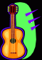

I have a few books that are helpful for playing Spitz on guitar:
"Spitz Guitar Song Book" is published by Doremi Music Publishg Co.
It contains the rhythm guitar part to 68 songs by Spitz, which includes songs
as new as "Haruka" and as old as "Hibari no Kokoro". The way in which to finger
each chord and the strumming rhythm for each song is explained.
Considering it goes for the same price as either of the two books I talk about below,
which are much thinner, this book is a great buy.
"Guitar Solo in Spitz Best Collection" volumes 1 and 2 are also published by Doremi. They are useful resources for anyone wishing to play Spitz songs on classical guitar. Or on piano. Each book has about a dozen arrangements of popular Spitz songs, arranged by Michiwo Tashima. They are meant to be played in solo, or in other words, the melody and harmonies are combined so that no vocals are necessary. Each book also comes with an audio CD of the solos being played so that you can tell what they are supposed to sound like. They sound quite pretty in my opinion.
| VOLUME 1 | VOLUME 2 | |
| Cherry | Hi-fi Lo-fi | |
| Hachimitsu | Sakana | |
| Sora mo Toberu Hazu | Kaede | |
| Ai no Kotoba | Supika | |
| Namida ga Kirari | Tsumetai Hoho | |
| Lunaluna | Unmei no Hito | |
| Aoi Kuruma | She-she!! | |
| Neko ni Naritai | Scarlet | |
| Babyface | Yume janai | |
| Kimi ga Omoide ni Naru mae ni | Hatsukoi Crazy | |
| Robinson | Nagisa | |
| Fake Fur |

Akane
Aoi Kuruma
Fake Fur
Hechima no Hana
Holiday
Indigo Chiheisen
Nagisa
Namida ga Kirari
Natsu no Mamono
Scarlet
Tsumetai Hoho
Unmei no Hito
Yuuhi ga Warau, Kimi mo Warau
Mail comments, suggestions, or corrections to sakurafiend@hotmail.com